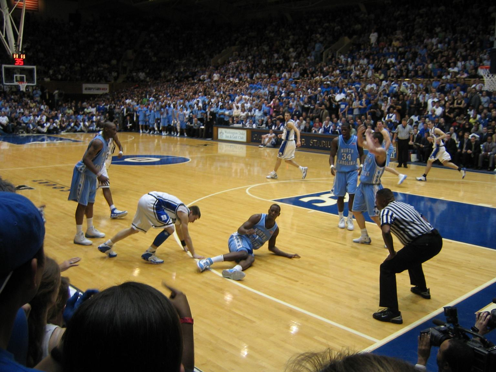

The rivalry between Duke University and the University of North Carolina is one of the most intense rivalry in sports. The schools are located only 10 miles apart and play in the same conference. They have played a total of 248 times and UNC has won 137 of those meetings. The two teams are perennially ranked as the top teams in the countries and have both been a pipeline to the NBA. Both schools have legendary names that every basketball fan knows: Dean Smith, Mike Krzyzewski, Michael Jordan, Kyrie Irving, Vince Carter, and many more.
Ironically enough, the two teams have never played each other before in the NCAA Tournament. Yet, UNC has hoisted the trophy six times and Duke five times. That puts both of them amongst the best teams in college basketball history.
| School | National Championships | Final Fours | ACC Championships | Wins | Head Coach |
|---|---|---|---|---|---|
| North Carolina | 6 | 20 | 49 | 137 | Roy Williams |
| Duke | 5 | 16 | 39 | 111 | Mike Krzyzewski |
Duke is currently ranked #1 in the Nation and UNC is ranked #7. They are set to meet at Duke’s Cameron Indoor Stadium on February 20, 2019 and then again at the Dean Smith Center on March 9, 2019. With both teams ranked so high in the polls this year, it is set to be an awesome matchup for the ages.